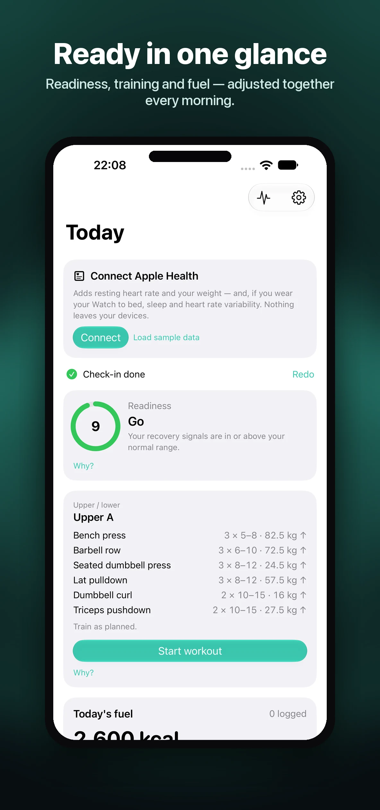
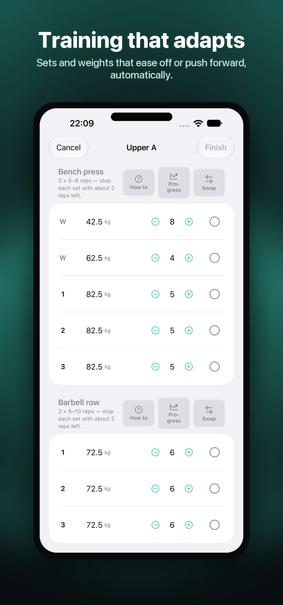
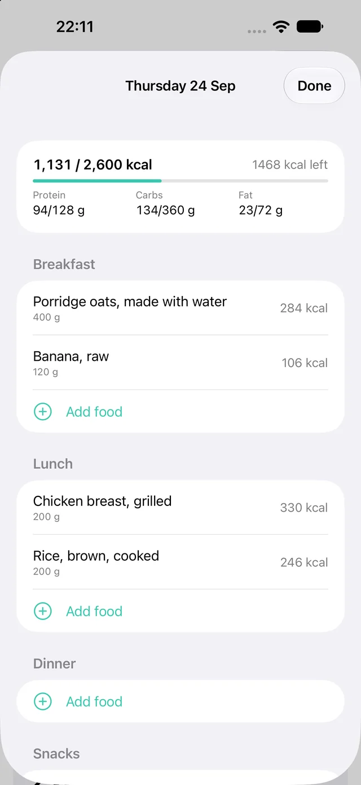
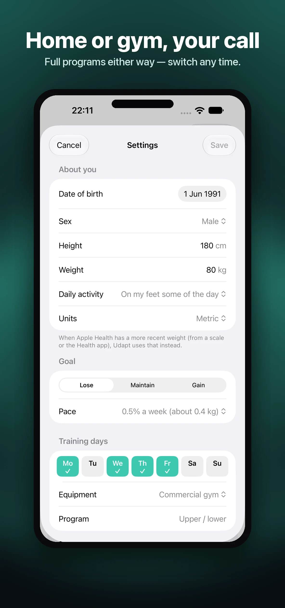

Readiness that means something
Heart rate variability, resting heart rate and sleep from Apple Health — or a 5-question morning check-in if you don't wear your Watch to bed. Either way, you get a score and a plain reason why.
Udapt reads Apple Health every morning and adjusts today's training and today's food targets together — one connected plan, with a plain-English reason for every change. No other app does both at once.

Most fitness apps make you choose: a training app, a nutrition app, a recovery app — none of them talking to each other. Udapt reads what changed overnight and adjusts the whole day's plan as one.
Heart rate variability, resting heart rate and sleep from Apple Health — or a 5-question morning check-in if you don't wear your Watch to bed. Either way, you get a score and a plain reason why.
A rough night trims today's sets and caps effort automatically. A good run of days lets your program progress. You can always keep the original session, one tap.

More carbs on training days, a little less on rest days — the week's total stays the same. After two weeks of logging, your calorie target adapts to what your body actually does, not a generic formula.

Search thousands of foods across UK, US, French and Australian tables, scan a barcode, or use on-device AI to log a meal from a photo or by describing it out loud.
Flag a shoulder, knee or lower back you're being careful with, and Udapt automatically swaps exercises that load it — for a like-for-like alternative that doesn't.
Full programs for a commercial gym, or a dumbbells-and-bodyweight-only variant for training at home. Switch any time.

Udapt never just shows you a new number. Every change comes with the reason behind it, and every rule in the engine has been checked against published research. Where something is Udapt's own design choice rather than an established finding, the app says so plainly instead of pretending otherwise.
Real figures from your own data, not a vague "you seem tired."
See exactly why today's number is different from yesterday's.
When the evidence is limited, Udapt tells you that too.
Honest about what the research does and doesn't show.
Your plan travels with you into the gym, no phone required.
Dial in your weight with the Digital Crown, reps with a tap — built for a watch screen, not a shrunk-down phone app.
Starts automatically after a working set, with a haptic when it's done.
Your score, right on your watch face.
"How ready am I?" or "Log my usual breakfast" — hands-free, from your wrist or your phone.
Udapt runs no servers. Your profile, workouts, food logs and check-ins never leave your device. The one disclosed exception: scanning a barcode sends just the number to Open Food Facts, a nonprofit food database, to identify the product — never a photo, never anything about you.
Most apps adjust your training or your food, not both together. Udapt reads Apple Health each morning and adjusts today's training and today's food targets as one connected plan.
No. A 5-question morning check-in is enough to adapt your plan if you don't wear a Watch overnight. If you do have Apple Health data, Udapt uses that too.
Every rule in Udapt's engine is checked against published research, not guesswork — and where something is a design choice, the app says so plainly.
Yes — set logging with the Digital Crown, a rest timer, and a readiness complication for your watch face.
Udapt is built on-device with no servers. Your data never leaves your phone, except a barcode number when you choose to scan one.
Yes — a dumbbells-and-bodyweight-only program variant is built in alongside the full-gym programs.
No ads, no tiers, no locked features — just a 7-day free trial, then one price.
Try everything, cancel any time.
The better deal if you're sticking with it.
Prices shown in GBP; your local App Store price may vary slightly by region. Cancel any time in Settings.
For iPhone, with a full Apple Watch app. Check back soon, or get in touch to hear when it launches.